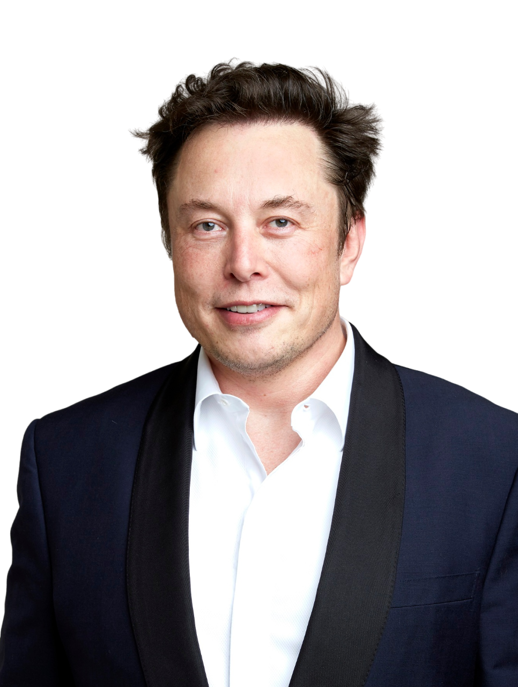

Welome To My Portfolio
I am Elon Musk and I am happy to introduce myself to you.
Informations About Me
My name is Elon Reeve Musk.
I was Born June 28, 1971 in Pretoria, Transvaal, South Africa and I am living in United States now.
I am Businessman and Investor.
My Business Career
I have started multiple businesses since 1995. With the initial success and liquidity I gained from selling equity in one of my businesses,
I was able to fund and launch subsequent ventures. I’m often considered a serial entrepreneur, and by the 2020s, several of my businesses had formed strategic partnerships.
In some cases, my employees have even taken on roles across more than one of my companies.
SpaceX
In early 2001, I became involved with the nonprofit Mars Society and began discussing plans to fund a project to place a growth chamber for plants on Mars.
In October of that same year, I traveled to Moscow, Russia, with Jim Cantrell and Adeo Ressi to look into buying refurbished intercontinental ballistic missiles (ICBMs) that could launch the greenhouse payloads into space.
We met with the companies NPO Lavochkin and Kosmotras, but I was seen as a novice in the industry, so we returned to the United States without an agreement for Russian launch services.
In February 2002, we went back to Russia, this time to inquire about purchasing three ICBMs.
After another meeting with Kosmotras, we were offered one rocket for $8 million, which I turned down.
I decided instead to start my own company to build affordable rockets.
With $100 million of my own money, I founded SpaceX in May 2002, becoming the company’s CEO and chief engineer.
SpaceX attempted its first launch of the Falcon 1 rocket in 2006.
Although the rocket failed to reach orbit, we secured a contract with NASA under the Commercial Orbital Transportation Services program.
After two more failed attempts that nearly brought me and my companies to the brink of bankruptcy, SpaceX finally succeeded in launching the Falcon 1 into orbit in 2008.
Later that year, we received a $1.6 billion Commercial Resupply Services contract from NASA for 12 flights of our Falcon 9 rocket and Dragon spacecraft to the International Space Station (ISS), which would replace the Space Shuttle after its 2011 retirement.
In 2012, our Dragon vehicle became the first commercial spacecraft to dock with the ISS.
In 2014, I personally examined the debris from the F9R Dev1 test.
Committed to the goal of reusable rockets, SpaceX successfully landed the first stage of a Falcon 9 on a land platform in 2015.
Later, we perfected landings on autonomous spaceport drone ships, which are ocean-based recovery platforms.
In 2018, we launched the Falcon Heavy; the inaugural mission carried my personal Tesla Roadster as a dummy payload.
Since 2019, we’ve been developing Starship, a fully reusable, super-heavy-lift launch vehicle intended to replace both the Falcon 9 and the Falcon Heavy.
In 2020, SpaceX launched its first crewed flight, Demo-2, making us the first private company to place astronauts into orbit and dock a crewed spacecraft with the ISS.
In 2024, NASA awarded us an $843 million contract to deorbit the ISS at the end of its lifespan.
Tesla
Tesla, Inc., originally Tesla Motors, was incorporated in July 2003 by Martin Eberhard and Marc Tarpenning, who were both actively involved in the company’s early development before I joined.
I led the Series A round of investment in February 2004, investing $6.35 million and becoming the majority shareholder.
I also joined Tesla’s board of directors as chairman and took an active role in overseeing the Roadster's product design, though I wasn’t deeply involved in the day-to-day operations at that time.
After a series of escalating conflicts in 2007, compounded by the financial crisis of 2007–2008, Eberhard was ousted from the company, and I took over as CEO and product architect in 2008.
In 2009, we settled a lawsuit with Eberhard, which designated me as a Tesla co-founder, along with Tarpenning and two others.
By 2019, I had become the longest-serving CEO of any automotive manufacturer globally.
In 2021, I nominally changed my title to "Technoking" while continuing as CEO.
We began delivering the Roadster, our first electric sports car, in 2008.
With approximately 2,500 units sold, it became the first production all-electric car to use lithium-ion battery cells.
We launched the four-door Model S sedan in 2012, followed by the Model X crossover in 2015.
Our mass-market sedan, the Model 3, was released in 2017, and by 2020, it had become the all-time best-selling plug-in electric car worldwide.
By June 2021, the Model 3 became the first electric car to surpass 1 million units sold globally.
We launched the Model Y crossover in 2020, and in December 2023, it became the best-selling vehicle of any kind, as well as the all-time best-selling electric car.
In 2019, we unveiled the Cybertruck, an all-electric pickup truck, which was delivered in November 2023.
Under my leadership, Tesla has also built multiple lithium-ion battery and electric vehicle factories, known as Gigafactories.
Since our initial public offering in 2010, Tesla’s stock has risen substantially.
In the summer of 2020, we became the most valuable carmaker, and later that year, we joined the S&P 500.
By October 2021, Tesla reached a market capitalization of $1 trillion, becoming the sixth U.S. company to achieve this milestone.
In November 2021, I proposed selling 10% of my Tesla stock on Twitter, noting that "much is made lately of unrealized gains being a means of tax avoidance."
After more than 3.5 million Twitter accounts supported the sale, I sold $6.9 billion of Tesla stock within a week, ultimately selling a total of $16.4 billion by year-end, meeting the 10% goal.
In February 2022, The Wall Street Journal reported that both my brother Kimbal and I were under investigation by the SEC for potential insider trading related to the sale.
In 2022, we unveiled Optimus, a robot being developed by Tesla.
Then, in June 2023, I met with Indian Prime Minister Narendra Modi in New York City, expressing my interest in investing in India "as soon as humanly possible."